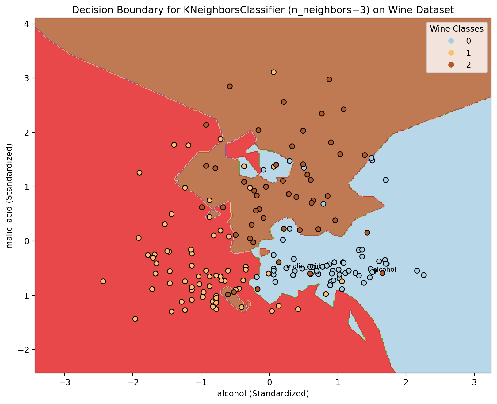
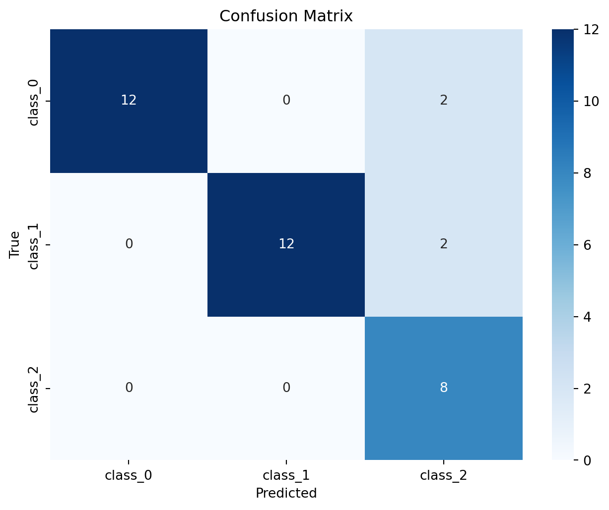

import numpy as np
import matplotlib.pyplot as plt
from sklearn.datasets import load_wine
from sklearn.model_selection import train_test_split
from sklearn.neighbors import KNeighborsClassifier
from sklearn.metrics import accuracy_score
from sklearn.preprocessing import StandardScaler
# Load the Wine dataset
wine = load_wine()
X = wine.data[:, :2] # Use only the first two features for visualization
y = wine.target
# Standardize the features for better visualization of decision boundary
scaler = StandardScaler()
X_std = scaler.fit_transform(X)Title: Classification
Introduction:
In this blog, we will unravel the essentials of classification, the requirements for building machine learning code, and showcase the beauty of data visualization. # Understanding Classification: Classification is a type of supervised learning where the algorithm learns from labeled training data to categorize new, unseen data into predefined classes or categories. For instance teaching a computer to distinguish between spam and non-spam emails or identify the genre of a song based on its features. # Requirements for Machine Learning Code: Data Collection and Preprocessing: A dataset that represents the problem is needed to be solved has to be collected. Then the data needs to be cleaned and preprocess the data to handle missing values, outliers, and standardize features.
Splitting Data: The dataset is divided into training and testing sets. The training set is used to train the model, while the testing set evaluates its performance on unseen data.
Choosing a Model: A suitable classification algorithm based on the nature of the problem is needed to be selected. Common algorithms include Decision Trees, Support Vector Machines, Logistic Regression, and Neural Networks.
Training the Model: The training data is fed into the chosen algorithm and let it learn the patterns and relationships between features and labels. Model Evaluation: The model’s performance is assessed using metrics like accuracy, precision, recall, and F1 score on the testing set. Fine-Tuning: The model parameters are optimized to improve its performance. Techniques like cross-validation can help in this phase. Deployment: Once satisfied with the model’s performance, it is deployed for making predictions on new, unseen data.
Data Visualization in Classification: Now, let’s bring the power of data visualization into play with a simple example.
Consider a binary classification problem where we aim to classify whether a student passes or fails based on two features:
hours of study
previous exam score.
In this example, we use a scatter plot to visualize the data points, with different colors representing pass and fail. Additionally, we visualize the confusion matrix to evaluate the model’s performance.
The Wine Dataset:
A Palette of Three Classes The Wine dataset serves as the canvas for our exploration. Comprising 13 features related to chemical analyses of wines grown in a specific Italian region. For the sake of visualization, we have chosen to focus on the first two features, standardizing them for optimal clarity.
Data Preprocessing
Feature Selection: Limiting the analysis to the first two features for visualization purposes.
Standardization: Scaling the features to a common range for improved visualization.
At the heart of classification algorithms lies KNN, a method both simplistic and powerful. The essence of KNN lies in its ability to make predictions based on the majority class among the k-nearest neighbors. It is a non-parametric, lazy learning algorithm, meaning it makes predictions at runtime rather than during training.
How KNN Works:
The operational paradigm of KNN involves the following steps:
Distance Computation: Calculate the distance between a query point and all other points in the dataset. Nearest Neighbors Selection: Identify the k-nearest neighbors to the query point based on calculated distances.
Majority Voting: Assign the class label to the query point based on the majority class among its k-nearest neighbors. KNN’s simplicity makes it an ideal candidate for our exploration into the intricacies of decision boundaries.
The code used to train the above data set and how it has been visualised is shown below.
The code showcases the class for each point on the data set is determined and visualize the decision boundaries.
# Split the dataset into training and testing sets
X_train, X_test, y_train, y_test = train_test_split(X_std, y, test_size=0.2, random_state=42)
# Create a k-Nearest Neighbors (k-NN) classifier
knn = KNeighborsClassifier(n_neighbors=3)
# Train the classifier on the training data
knn.fit(X_train, y_train)
# Make predictions on the test data
predictions = knn.predict(X_test)
# Evaluate the accuracy of the model
accuracy = accuracy_score(y_test, predictions)
print(f"Accuracy: {accuracy:.2f}")
# Plot the decision boundary with feature names
h = .02 # Step size in the mesh
x_min, x_max = X_std[:, 0].min() - 1, X_std[:, 0].max() + 1
y_min, y_max = X_std[:, 1].min() - 1, X_std[:, 1].max() + 1
xx, yy = np.meshgrid(np.arange(x_min, x_max, h), np.arange(y_min, y_max, h))
# Create a meshgrid of points and predict the class for each point
Z = knn.predict(np.c_[xx.ravel(), yy.ravel()])
Z = Z.reshape(xx.shape)
# Plot the decision boundary
plt.figure(figsize=(10, 8))
plt.contourf(xx, yy, Z, cmap=plt.cm.Paired, alpha=0.8)
# Plot the training points
scatter = plt.scatter(X_std[:, 0], X_std[:, 1], c=y, edgecolors='k', cmap=plt.cm.Paired)
plt.xlabel(f'{wine.feature_names[0]} (Standardized)')
plt.ylabel(f'{wine.feature_names[1]} (Standardized)')
# Add legend with target names
plt.legend(*scatter.legend_elements(), title='Wine Classes')
# Display feature names near the points
for i, txt in enumerate(wine.feature_names[:2]):
plt.annotate(txt, (X_std[i, 0], X_std[i, 1]), fontsize=8, color='black')
plt.title('Decision Boundary for KNeighborsClassifier (n_neighbors=3) on Wine Dataset')
plt.show()Accuracy: 0.89
Interpreting the Visuals:
As we gaze upon the mesmerizing plot, each region’s color unveils the model’s decision boundary, distinguishing the wine classes. The scattered points represent the training data, each one contributing to the algorithm’s understanding of the dataset.
from sklearn.metrics import confusion_matrix
import seaborn as sns
# Plot the confusion matrix
conf_matrix = confusion_matrix(y_test, predictions)
plt.figure(figsize=(8, 6))
sns.heatmap(conf_matrix, annot=True, fmt='d', cmap='Blues', xticklabels=wine.target_names, yticklabels=wine.target_names)
plt.title('Confusion Matrix')
plt.xlabel('Predicted')
plt.ylabel('True')
plt.show()
Interpreting the Confusion Matrix:
The confusion matrix provides a granular view of the model’s performance by breaking down predictions into four categories:
True Positives (TP): Instances where the model correctly predicts the positive class.
True Negatives (TN): Instances where the model correctly predicts the negative class.
False Positives (FP): Instances where the model incorrectly predicts the positive class.
False Negatives (FN): Instances where the model incorrectly predicts the negative class.
The provided code generates a heatmap to visualize the confusion matrix for a multiclass classification task using the KNeighborsClassifier with 3 neighbors. The confusion matrix summarizes the model’s performance by comparing predicted and true class labels. Each cell in the heatmap represents the count of instances classified into specific categories. The annotations within the cells provide a quantitative measure of the model’s accuracy. The color intensity, ranging from light to dark blue, conveys the magnitude of correct and incorrect predictions. This visualization aids in identifying which classes the model excels at predicting and where it may encounter challenges, offering a comprehensive and intuitive overview of the classification performance on the Wine dataset.
References have been taken from various sources on the Internet.